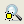

Highlight Menu in Calibre RVE
Menu Item |
Description |
|---|---|
Clear Highlights |
Clears highlights in all report tabs, windows, and connected viewers. Keyboard shortcut: F4 |
Zoom to Last Highlight  |
Zooms to the most recently highlighted result. Keyboard shortcut: F5 |
No View Change Pan to Highlights Zoom to Highlights |
Specifies the action on new highlight event. Note: when “Highlight in Context” is enabled from the Short Isolation Toolbar, the view changes to the selected cell even when “No View Change” is selected. |
Clear Existing Highlights |
Specifies whether to clear existing highlights on a new highlight action. Keyboard shortcut: F6 (toggle setting) |
Use Cell Map |
Specifies whether to use the cell mapping specified in the Map RVE Cells dialog box (opened with the Setup Cell Map menu option). Keyboard shortcut: F7 (toggle setting) |
Setup Cell Map |
Opens the Map RVE Cells dialog box, from which you can specify a map between cells in the results database and the library, design cell, and view in the Cadence design tool. See “Map Calibre RVE Cells to Different Cadence Library for Highlighting”. |